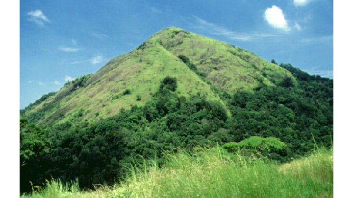

Ranipuram
Ranipuram
Ranipuram is a renowned tourist destination in the northern tip of Kerala. Located in Kasaragod, it is situated 750 m above sea level. It makes for a perfect picnic spot where one can even come across the occasional herd of elephants. Once known as Madathumala, it borders Karnataka and boasts of some of the best trekking trails in the area. Regular buses are available on this route and jeep rides are another favourite among all our visitors. The versatile vegetation that includes evergreen shola woods, monsoon forests and grasslands make it a good place to relax and take some time off from the rigors of daily life.